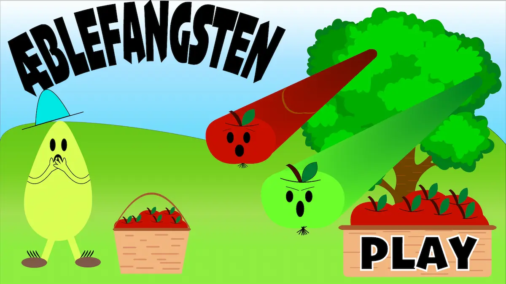

UX- Tshirt-webshop

Spil
Spelet är nästan klart. Det ända som saknas är ljud till spelet när det är igång och nå ljud när man klickar äpplerna. All information om hur jag har byggt upp spelet finns på länken nedan
Klik for siten